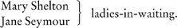
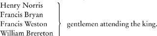

CAST OF CHARACTERS
In Putney, 1500
Walter Cromwell, a blacksmith and brewer.
Thomas, his son.
Bet, his daughter.
Kat, his daughter.
Morgan Williams, Kat's husband.
At Austin Friars, from 1527
Thomas Cromwell, a lawyer.
Liz Wykys, his wife.
Gregory, their son.
Anne, their daughter.
Grace, their daughter.
Henry Wykys, Liz's father, a wool trader.
Mercy, his wife.
Johane Williamson, Liz's sister.
John Williamson, her husband.
Johane (Jo), their daughter.
Alice Wellyfed, Cromwell's niece, daughter of Bet Cromwell.
Richard Williams, later called Cromwell, son of Kat and Morgan.
Rafe Sadler, Cromwell's chief clerk, brought up at Austin Friars.
Thomas Avery, the household accountant.
Helen Barre, a poor woman taken in by the household.
Thurston, the cook.
Christophe, a servant.
Dick Purser, keeper of the guard dogs.
At Westminster
Thomas Wolsey, Archbishop of York, cardinal, papal legate, Lord Chancellor: Thomas Cromwell's patron.
George Cavendish, Wolsey's gentleman usher and later biographer.
Stephen Gardiner, Master of Trinity Hall, the cardinal's secretary, later Master Secretary to Henry VIII: Cromwell's most devoted enemy.
Thomas Wriothesley, Clerk of the Signet, diplomat, protégé of both Cromwell and Gardiner.
Richard Riche, lawyer, later Solicitor General.
Thomas Audley, lawyer, Speaker of the House of Commons, Lord Chancellor after Thomas More's resignation.
At Chelsea
Thomas More, lawyer and scholar, Lord Chancellor after Wolsey's fall. Alice, his wife.
Sir John More, his aged father.
Margaret Roper, his eldest daughter, married to Will Roper.
Anne Cresacre, his daughter-in-law.
Henry Pattinson, a servant.
In the city
Humphrey Monmouth, merchant, imprisoned for sheltering William Tyndale, translator of the Bible into English.
John Petyt, merchant, imprisoned on suspicion of heresy.
Lucy, his wife.
John Parnell, merchant, embroiled in long-running legal dispute with Thomas More.
Little Bilney, scholar burned for heresy.
John Frith, scholar burned for heresy.
Antonio Bonvisi, merchant, from Lucca.
Stephen Vaughan, merchant at Antwerp, friend of Cromwell.
At court
Henry VIII.
Katherine of Aragon, his first wife, later known as Dowager Princess of Wales.
Mary, their daughter.
Anne Boleyn, his second wife.
Mary, her sister, widow of William Carey and Henry's ex-mistress.
Thomas Boleyn, her father, later Earl of Wiltshire and Lord Privy Seal: likes to be known as ‘Monseigneur’.
George, her brother, later Lord Rochford.
Jane Rochford, George's wife.
Thomas Howard, Duke of Norfolk, Anne's uncle.
Mary Howard, his daughter.

Charles Brandon, Duke of Suffolk, old friend of Henry, married to his sister Mary.

Mark Smeaton, a musician.
Henry Wyatt, a courtier.
Thomas Wyatt, his son.
Henry Fitzroy, Duke of Richmond, the king's illegitimate son.
Henry Percy, Earl of Northumberland.
The clergy
William Warham, aged Archbishop of Canterbury.
Cardinal Campeggio, papal envoy.
John Fisher, Bishop of Rochester, legal adviser to Katherine of Aragon.
Thomas Cranmer, Cambridge scholar, reforming Archbishop of Canterbury, succeeding Warham.
Hugh Latimer, reforming priest, later Bishop of Worcester.
Rowland Lee, friend of Cromwell, later Bishop of Coventry and Lichfield.
In Calais
Lord Berners, the Governor, a scholar and translator.
Lord Lisle, the incoming Governor.
Honor, his wife.
William Stafford, attached to the garrison.
At Hatfield
Lady Bryan, mother of Francis, in charge of the infant princess, Elizabeth.
Lady Anne Shelton, Anne Boleyn's aunt, in charge of the former princess, Mary.
The ambassadors
Eustache Chapuys, career diplomat from Savoy, London ambassador of Emperor Charles V.
Jean de Dinteville, an ambassador from Francis I.
The Yorkist claimants to the throne
Henry Courtenay, Marquis of Exeter, descended from a daughter of Edward IV.
Gertrude, his wife.
Margaret Pole, Countess of Salisbury, niece of Edward IV.
Lord Montague, her son.
Geoffrey Pole, her son.
Reginald Pole, her son.
The Seymour family at Wolf Hall
Old Sir John, who has an affair with the wife of his eldest son Edward.
Edward Seymour, his son.
Thomas Seymour, his son.
Jane, his daughter: at court.
Lizzie, his daughter, married to the Governor of Jersey.
William Butts, a physician.
Nikolaus Kratzer, an astronomer.
Hans Holbein, an artist.
Sexton, Wolsey's fool.
Elizabeth Barton, a prophetess.